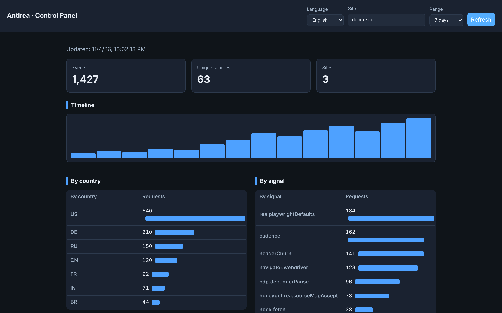

1 · Detect
A browser guard flags DevTools/CDP attach, automation (Playwright/Puppeteer), integrity tampering, and a verified REA fingerprint. Every attempt is reported to your dashboard.
Open source · Apache-2.0 · self-hosted
NoREA (“no REA”) is a drop-in toolkit that detects, deceives and blocks reverse-engineering tools — including CDP/DevTools-based ones like REA — and keeps the logic that matters off the client entirely. For websites, SaaS and apps.
Honest by design: only server-side execution is hermetic; client-side layers deter, deceive and report.

Reverse-engineering tools like REA attach to a browser (via the Chrome DevTools Protocol), read your bundles and source maps, and drive scripted sessions — turning your shipped JavaScript into a blueprint for cloning. Every business that ships a web app exposes its front-end code.
A browser guard flags DevTools/CDP attach, automation (Playwright/Puppeteer), integrity tampering, and a verified REA fingerprint. Every attempt is reported to your dashboard.
A server-side honeypot serves inert decoy code (with canary tokens) to requests scored as analysis — behavioural detection that doesn’t trust the User-Agent, so forging headers raises the score.
The logic that matters runs server-side (hermetic — REA never sees the algorithm); code that must ship to the browser can be compiled to WASM (an opaque binary).
NoREA ships fingerprints verified against REA’s public source, each documented with its evadability:
Accept: application/source-map+json with no cookie or referer. No browser does this → near-certain, hard to evade.navigator.webdriver + 1280×720 + UTC + reduced-motion…) is a distinctive combination.<script src="/antirea-guard.iife.js"
data-site-id="my-site"
data-endpoint="https://collector.example.com/api/events"
data-mode="silent"></script>import express from "express";
import { honeypot } from "@antirea/honeypot";
const app = express();
app.use(honeypot({
siteId: "my-site",
protect: [/^\/assets\/.*\.js$/, /\.map$/],
mode: "shadow", // tune, then go "live"
reportUrl: "https://collector.example.com/api/events",
}));
app.use(express.static("public"));// server — the algorithm never reaches the browser
import { createSecureFnRouter } from "@antirea/secure-fn";
app.use("/secure", createSecureFnRouter({
secret: process.env.SECUREFN_SECRET,
functions: { pricing: (a) => ({ result: a.x * 1337 + 17 }) },
}));Full docs, Docker deploy and the control panel are in the GitHub repository.
Using Claude Code, Cursor, GitHub Copilot or any coding agent? Paste this prompt and let it wire NoREA into your project:
Add NoREA (Antirea) anti reverse-engineering protection to this project,
from https://github.com/diamondrubinny/Antirea.
1. Install the packages: @antirea/guard, @antirea/honeypot, @antirea/secure-fn
(and @antirea/collector if we want the dashboard).
2. Add the guard <script> (or import initGuard) to our pages, pointing
data-endpoint at our collector.
3. Mount the honeypot middleware before our static asset handler, protecting
our JS bundles and *.map; start in "shadow" mode.
4. Move our most sensitive business logic (pricing/scoring/licensing) into a
secure-fn router so it runs server-side; replace the client calls with
createSecureClient().invoke(...).
5. For any sensitive logic that must stay client-side, compile it to WASM per
examples/wasm-logic and load it via instantiateProtectedWasm.
Follow the repo's README and docs/ for exact APIs. Keep everything type-checked
and run the tests.
Tip: point the agent at the repo’s README.md, docs/REA-SIGNATURES.md and
docs/WASM.md for exact APIs.
SaaS and software owners, agencies, and product teams who ship proprietary web apps and want to make cloning and reverse-engineering expensive — and visible. Self-hosted, privacy-respecting (no raw IPs stored), and free under Apache-2.0.